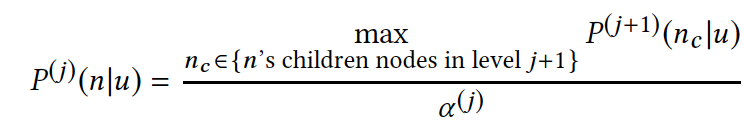
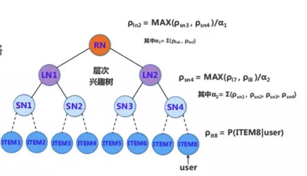

之前介绍过基于乘积量化方式PQ构建分库索引的fasis工具解决召回效率低的问题，本文介绍一种基于树的高效匹配算法。我们在数据结构上知道搜索二叉树BST等系列的树查找时间复杂度是对数级别，knn based的一些检索结构KD树等都是检索比较高效的数据结构，通过分而治之的方式进行不断查找。基于树这样的天生的优良特性，阿里妈妈的作者们在推荐领域下，提出TDM算法解决全库检索效率低和推荐系统两阶段分割的问题。针对召回和排序两阶段联合为一个阶段是目前的一个大趋势，而本文重点关注的是如何高效地进行全库检索。下文为个人解读的主要梳理部分
问题背景：某某场景下，加速全库匹配过程
文章：
TDM一期：Learning Tree-based Deep Model for Recommender Systems
TDM二期：Joint Optimization of Tree-based Index and Deep Model for Recommender Systems
代码：https://github.com/alibaba/x-deeplearning/tree/master/xdl-algorithm-solution/TDM
离线训练： https://github.com/alibaba/x-deeplearning/wiki/深度树匹配模型(TDM)
在线Serving：https://github.com/alibaba/x-deeplearning/wiki/TDMServing
来源：参考人脑，兴趣的建立由粗到细的组织方式和检索方法，比如10亿的商品列表，只需要30次的查找
How: 为什么检索出来的top-k，就是用户感兴趣的 Topk?有效性如何去保证？有效性检索的建模背后隐藏着对用户兴趣的建模。
基础结构：用户兴趣的最大堆树，首先是定义第j层用户对节点n的兴趣为用户对对节点n的子节点层下j+1的兴趣最大值。

由于是递归定义，具有性质：最大堆树下，当前层最优 TopK 节点的父亲，一定属于上一层的最优 TopK。
扩展点：这里的max操作可以如何去替换？min, all??
举例如下：

如果item6和item8是全局的最优top2节点，那么SN层中SN3和SN4是最优的top2.
由此可见，用户兴趣的最大堆树的定义是保证这种检索(beam seach)有效的充分条件，所以实际做的过程可以从根节点出发，逐层选择top-k,一直到叶子节点。
既然最大堆树的定义保证这种检索的有效性，那么这棵树应该如何去学习？
从检索本质看，针对具体的某一层，beam search检索过程需要保证当前层检索层具有top k排序的能力。
整体的思路：构建符合这样性质的样本，让样本牵引模型学习，去逼近最大堆。
具体的做法：主要分叶子层的节点兴趣和中间层的节点兴趣两部分进行构建。叶子层的节点兴趣，从用户的直接行为产生，对应着感兴趣和不感兴趣。中间层的兴趣节点，用最大堆递归上述的方式去推导每一层的序标签，当我们有了每一层的序标签，就可以用深度学习去拟合序标签的样本。